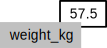

Overview
Teaching: 45 min
Exercises: 0 minQuestions
How do I read data into R?
How do I assign variables?
What is a data frame?
How do I access subsets a data frame?
How do I calculate simple statistics like mean and median?
Where can I get help?
How can I plot my data?
Objectives
Read tabular data from a file into a program.
Assign values to variables.
Select individual values and subsections from data.
Perform operations on a data frame of data.
Display simple graphs.
We are studying inflammation in patients who have been given a new treatment for arthritis, and need to analyze the first dozen data sets. The data sets are stored in comma-separated values (CSV) format. Each row holds the observations for just one patient. Each column holds the inflammation measured in a day, so we have a set of values in successive days. The first few rows of our first file look like this:
0,0,1,3,1,2,4,7,8,3,3,3,10,5,7,4,7,7,12,18,6,13,11,11,7,7,4,6,8,8,4,4,5,7,3,4,2,3,0,0
0,1,2,1,2,1,3,2,2,6,10,11,5,9,4,4,7,16,8,6,18,4,12,5,12,7,11,5,11,3,3,5,4,4,5,5,1,1,0,1
0,1,1,3,3,2,6,2,5,9,5,7,4,5,4,15,5,11,9,10,19,14,12,17,7,12,11,7,4,2,10,5,4,2,2,3,2,2,1,1
0,0,2,0,4,2,2,1,6,7,10,7,9,13,8,8,15,10,10,7,17,4,4,7,6,15,6,4,9,11,3,5,6,3,3,4,2,3,2,1
0,1,1,3,3,1,3,5,2,4,4,7,6,5,3,10,8,10,6,17,9,14,9,7,13,9,12,6,7,7,9,6,3,2,2,4,2,0,1,1
We want to:
- Load data into memory,
- Calculate the average value of inflammation per day across all patients, and
- Plot the results.
To do all that, we’ll have to learn a little bit about programming.
Loading Data
To load our inflammation data, first we need to tell our computer where is the file that contains the values. We have been told its name is inflammation-01.csv. This is very important in R, if we forget this step we’ll get an error message when trying to read the file. We can change the current working directory using the function setwd. For this example, we change the path to the directory we just created:
setwd("~/Desktop/r-novice-inflammation/")
Just like in the Unix Shell, we type the command and then press Enter (or return).
Alternatively you can change the working directory using the RStudio GUI using the menu option Session -> Set Working Directory -> Choose Directory...
The data files are located in the directory data inside the working directory. Now we can load the data into R using read.csv:
read.csv(file = "data/inflammation-01.csv", header = FALSE)
The expression read.csv(...) is a function call that asks R to run the function read.csv.
read.csv has two arguments: the name of the file we want to read, and whether the first line of the file contains names for the columns of data.
The filename needs to be a character string (or string for short), so we put it in quotes. Assigning the second argument, header, to be FALSE indicates that the data file does not have column headers. We’ll talk more about the value FALSE, and its converse TRUE, in lesson 04.
Other Options for Reading CSV Files
read.csvactually has many more arguments that you may find useful when importing your own data in the future. You can learn more about these options in this supplementary lesson.
Loading Data with Headers
What happens if you forget to put
header = FALSE? The default value isheader = TRUE, which you can check with?read.csvorhelp(read.csv). What do you expect will happen if you leave the default value? Before you run any code, think about what will happen to the first few rows of your data frame, and its overall size. Then run the following code and see if your expectations agree:read.csv(file = "data/inflammation-01.csv")
Reading Different Decimal Point Formats
Depending on the country you live in, your standard can use the dot or the comma as decimal mark. Also, different devices or software can generate data with different decimal points. Take a look at
?read.csvand write the code to load a file calledcommadec.txtthat has numeric values with commas as decimal mark, separated by semicolons.
The utility of a function is that it will perform its given action on whatever value is passed to the named argument(s).
For example, in this case if we provided the name of a different file to the argument file, read.csv would read it instead.
We’ll learn more of the details about functions and their arguments in the next lesson.
Since we didn’t tell it to do anything else with the function’s output, the console will display the full contents of the file inflammation-01.csv.
Try it out.
read.csv read the file, but we can’t use data unless we assign it to a variable.
A variable is just a name for a value, such as x, current_temperature, or subject_id.
We can create a new variable simply by assigning a value to it using <-
weight_kg <- 55
Once a variable has a value, we can print it by typing the name of the variable and hitting Enter (or return).
In general, R will print to the console any object returned by a function or operation unless we assign it to a variable.
weight_kg
[1] 55
We can do arithmetic with the variable:
# weight in pounds:
2.2 * weight_kg
[1] 121
Commenting
We can add comments to our code using the
#character. It is useful to document our code in this way so that others (and us the next time we read it) have an easier time following what the code is doing.
We can also change an object’s value by assigning it a new value:
weight_kg <- 57.5
# weight in kilograms is now
weight_kg
[1] 57.5
If we imagine the variable as a sticky note with a name written on it, assignment is like putting the sticky note on a particular value:

This means that assigning a value to one object does not change the values of other variables. For example, let’s store the subject’s weight in pounds in a variable:
weight_lb <- 2.2 * weight_kg
# weight in kg...
weight_kg
[1] 57.5
# ...and in pounds
weight_lb
[1] 126.5

and then change weight_kg:
weight_kg <- 100.0
# weight in kg now...
weight_kg
[1] 100
# ...and weight in pounds still
weight_lb
[1] 126.5

Since weight_lb doesn’t “remember” where its value came from, it isn’t automatically updated when weight_kg changes.
This is different from the way spreadsheets work.
Printing with Parentheses
An alternative way to print the value of a variable is to use () around the assignment statement. As an example:
(total_weight <- weight_kg + weight_lb)adds the values ofweight_kgandweight_lb, assigns the result to thetotal_weight, and finally prints the assigned value of the variabletotal_weight.
Now that we know how to assign things to variables, let’s re-run read.csv and save its result:
dat <- read.csv(file = "data/inflammation-01.csv", header = FALSE)
This statement doesn’t produce any output because assignment doesn’t display anything.
If we want to check that our data has been loaded, we can print the variable’s value.
However, for large data sets it is convenient to use the function head to display only the first few rows of data.
head(dat)
V1 V2 V3 V4 V5 V6 V7 V8 V9 V10 V11 V12 V13 V14 V15 V16 V17 V18 V19 V20
1 0 0 1 3 1 2 4 7 8 3 3 3 10 5 7 4 7 7 12 18
2 0 1 2 1 2 1 3 2 2 6 10 11 5 9 4 4 7 16 8 6
3 0 1 1 3 3 2 6 2 5 9 5 7 4 5 4 15 5 11 9 10
4 0 0 2 0 4 2 2 1 6 7 10 7 9 13 8 8 15 10 10 7
5 0 1 1 3 3 1 3 5 2 4 4 7 6 5 3 10 8 10 6 17
6 0 0 1 2 2 4 2 1 6 4 7 6 6 9 9 15 4 16 18 12
V21 V22 V23 V24 V25 V26 V27 V28 V29 V30 V31 V32 V33 V34 V35 V36 V37 V38
1 6 13 11 11 7 7 4 6 8 8 4 4 5 7 3 4 2 3
2 18 4 12 5 12 7 11 5 11 3 3 5 4 4 5 5 1 1
3 19 14 12 17 7 12 11 7 4 2 10 5 4 2 2 3 2 2
4 17 4 4 7 6 15 6 4 9 11 3 5 6 3 3 4 2 3
5 9 14 9 7 13 9 12 6 7 7 9 6 3 2 2 4 2 0
6 12 5 18 9 5 3 10 3 12 7 8 4 7 3 5 4 4 3
V39 V40
1 0 0
2 0 1
3 1 1
4 2 1
5 1 1
6 2 1
Assigning Values to Variables
Draw diagrams showing what variables refer to what values after each statement in the following program:
mass <- 47.5 age <- 122 mass <- mass * 2.0 age <- age - 20
Manipulating Data
Now that our data is loaded in memory, we can start doing things with it.
First, let’s ask what type of thing dat is:
class(dat)
[1] "data.frame"
The output tells us that is a data frame. Think of this structure as a spreadsheet in MS Excel that many of us are familiar with. Data frames are very useful for storing data and you will find them elsewhere when programming in R. A typical data frame of experimental data contains individual observations in rows and variables in columns.
We can see the shape, or dimensions, of the data frame with the function dim:
dim(dat)
[1] 60 40
This tells us that our data frame, dat, has 60 rows and 40 columns.
If we want to get a single value from the data frame, we can provide an index in square brackets, just as we do in math:
# first value in dat
dat[1, 1]
[1] 0
# middle value in dat
dat[30, 20]
[1] 16
An index like [30, 20] selects a single element of a data frame, but we can select whole sections as well.
For example, we can select the first ten days (columns) of values for the first four patients (rows) like this:
dat[1:4, 1:10]
V1 V2 V3 V4 V5 V6 V7 V8 V9 V10
1 0 0 1 3 1 2 4 7 8 3
2 0 1 2 1 2 1 3 2 2 6
3 0 1 1 3 3 2 6 2 5 9
4 0 0 2 0 4 2 2 1 6 7
The slice 1:4 means, “Start at index 1 and go to index 4.”
The slice does not need to start at 1, e.g. the line below selects rows 5 through 10:
dat[5:10, 1:10]
V1 V2 V3 V4 V5 V6 V7 V8 V9 V10
5 0 1 1 3 3 1 3 5 2 4
6 0 0 1 2 2 4 2 1 6 4
7 0 0 2 2 4 2 2 5 5 8
8 0 0 1 2 3 1 2 3 5 3
9 0 0 0 3 1 5 6 5 5 8
10 0 1 1 2 1 3 5 3 5 8
We can use the function c, which stands for combine, to select non-contiguous values:
dat[c(3, 8, 37, 56), c(10, 14, 29)]
V10 V14 V29
3 9 5 4
8 3 5 6
37 6 9 10
56 7 11 9
We also don’t have to provide a slice for either the rows or the columns.
If we don’t include a slice for the rows, R returns all the rows; if we don’t include a slice for the columns, R returns all the columns.
If we don’t provide a slice for either rows or columns, e.g. dat[, ], R returns the full data frame.
# All columns from row 5
dat[5, ]
V1 V2 V3 V4 V5 V6 V7 V8 V9 V10 V11 V12 V13 V14 V15 V16 V17 V18 V19 V20
5 0 1 1 3 3 1 3 5 2 4 4 7 6 5 3 10 8 10 6 17
V21 V22 V23 V24 V25 V26 V27 V28 V29 V30 V31 V32 V33 V34 V35 V36 V37 V38
5 9 14 9 7 13 9 12 6 7 7 9 6 3 2 2 4 2 0
V39 V40
5 1 1
# All rows from column 16
dat[, 16]
[1] 4 4 15 8 10 15 13 9 11 6 3 8 12 3 5 10 11 4 11 13 15 5 14
[24] 13 4 9 13 6 7 6 14 3 15 4 15 11 7 10 15 6 5 6 15 11 15 6
[47] 11 15 14 4 10 15 11 6 13 8 4 13 12 9
Addressing Columns by Name
Columns can also be addressed by name, with either the
$operator (ie.dat$Age) or square brackets (ie.dat[,'Age']). You can learn more about subsetting by column name in this supplementary lesson.
Now let’s perform some common mathematical operations to learn about our inflammation data. When analyzing data we often want to look at partial statistics, such as the maximum value per patient or the average value per day. One way to do this is to select the data we want to create a new temporary data frame, and then perform the calculation on this subset:
# first row, all of the columns
patient_1 <- dat[1, ]
# max inflammation for patient 1
max(patient_1)
[1] 18
Forcing Conversion
The code above may give you an error in some R installations, since R does not automatically convert a sliced row of a
data.frameto a vector. (Confusingly, sliced columns are automatically converted.) If this happens, you can use theas.numericcommand to convert the row of data to a numeric vector:
patient_1 <- as.numeric(dat[1, ])
max(patient_1)You can also check the
classof each object:
class(dat[1, ])
class(as.numeric(dat[1, ]))
We don’t actually need to store the row in a variable of its own. Instead, we can combine the selection and the function call:
# max inflammation for patient 2
max(dat[2, ])
[1] 18
R also has functions for other common calculations, e.g. finding the minimum, mean, median, and standard deviation of the data:
# minimum inflammation on day 7
min(dat[, 7])
[1] 1
# mean inflammation on day 7
mean(dat[, 7])
[1] 3.8
# median inflammation on day 7
median(dat[, 7])
[1] 4
# standard deviation of inflammation on day 7
sd(dat[, 7])
[1] 1.725187
What if we need the maximum inflammation for all patients, or the average for each day? As the diagram below shows, we want to perform the operation across a margin of the data frame:

To support this, we can use the apply function.
Getting Help
To learn about a function in R, e.g.
apply, we can read its help documention by runninghelp(apply)or?apply.
apply allows us to repeat a function on all of the rows (MARGIN = 1) or columns (MARGIN = 2) of a data frame.
Thus, to obtain the average inflammation of each patient we will need to calculate the mean of all of the rows (MARGIN = 1) of the data frame.
avg_patient_inflammation <- apply(dat, 1, mean)
And to obtain the average inflammation of each day we will need to calculate the mean of all of the columns (MARGIN = 2) of the data frame.
avg_day_inflammation <- apply(dat, 2, mean)
Since the second argument to apply is MARGIN, the above command is equivalent to apply(dat, MARGIN = 2, mean).
We’ll learn why this is so in the next lesson.
Efficient Alternatives
Some common operations have more efficient alternatives. For example, you can calculate the row-wise or column-wise means with
rowMeansandcolMeans, respectively.
Slicing (Subsetting) Data
A subsection of a data frame is called a slice. We can take slices of character vectors as well:
animal <- c("m", "o", "n", "k", "e", "y") # first three characters animal[1:3][1] "m" "o" "n"# last three characters animal[4:6][1] "k" "e" "y"
If the first four characters are selected using the slice
animal[1:4], how can we obtain the first four characters in reverse order?What is
animal[-1]? What isanimal[-4]? Given those answers, explain whatanimal[-1:-4]does.Use a slice of
animalto create a new character vector that spells the word “eon”, i.e.c("e", "o", "n").
Subsetting More Data
Suppose you want to determine the maximum inflammation for patient 5 across days three to seven. To do this you would extract the relevant slice from the data frame and calculate the maximum value. Which of the following lines of R code gives the correct answer?
max(dat[5, ])max(dat[3:7, 5])max(dat[5, 3:7])max(dat[5, 3, 7])
Slicing and Re-Assignment
Using the inflammation data frame
datfrom above: Let’s pretend there was something wrong with the instrument on the first five days for every second patient (#2, 4, 6, etc.), which resulted in the measurements being twice as large as they should be.
- Write a vector containing each affected patient (hint:
? seq)- Create a new data frame with in which you halve the first five days’ values in only those patients
- Print out the corrected data frame to check that your code has fixed the problem
Solution
whichPatients <- seq(2,40,2) whichDays <- c(1:5) dat2 <- dat dat2[whichPatients,whichDays] <- dat2[whichPatients,whichDays]/2 (dat2)
Using the Apply Function on Patient Data
Challenge: the apply function can be used to summarize datasets and subsets of data across rows and columns using the MARGIN argument. Suppose you want to calculate the mean inflammation for specific days and patients in the patient dataset (i.e. 60 patients across 40 days).
Please use a combination of the apply function and indexing to:
- calculate the mean inflammation for patients 1 to 5 over the whole 40 days
- calculate the mean inflammation for days 1 to 10 (across all patients).
- calculate the mean inflammation for every second day (across all patients).
Think about the number of rows and columns you would expect as the result before each apply call and check your intuition by applying the mean function.
Solution
# 1. apply(dat[1:5, ], 1, mean) # 2. apply(dat[, 1:10], 2, mean) # 3. apply(dat[, seq(1,40, by=2)], 2, mean)
Plotting
The mathematician Richard Hamming once said, “The purpose of computing is insight, not numbers,” and the best way to develop insight is often to visualize data. Visualization deserves an entire lecture (or course) of its own, but we can explore a few of R’s plotting features.
Let’s take a look at the average inflammation over time.
Recall that we already calculated these values above using apply(dat, 2, mean) and saved them in the variable avg_day_inflammation.
Plotting the values is done with the function plot.
plot(avg_day_inflammation)

Above, we gave the function plot a vector of numbers corresponding to the average inflammation per day across all patients.
plot created a scatter plot where the y-axis is the average inflammation level and the x-axis is the order, or index, of the values in the vector, which in this case correspond to the 40 days of treatment.
The result is roughly a linear rise and fall, which is suspicious: based on other studies, we expect a sharper rise and slower fall.
Let’s have a look at two other statistics: the maximum and minimum inflammation per day.
max_day_inflammation <- apply(dat, 2, max)
plot(max_day_inflammation)

min_day_inflammation <- apply(dat, 2, min)
plot(min_day_inflammation)

The maximum value rises and falls perfectly smoothly, while the minimum seems to be a step function. Neither result seems particularly likely, so either there’s a mistake in our calculations or something is wrong with our data.
Plotting Data
Create a plot showing the standard deviation of the inflammation data for each day across all patients.
Key Points
Use
variable <- valueto assign a value to a variable in order to record it in memory.Objects are created on demand whenever a value is assigned to them.
The function
dimgives the dimensions of a data frame.Use
object[x, y]to select a single element from a data frame.Use
from:toto specify a sequence that includes the indices fromfromtoto.All the indexing and slicing that works on data frames also works on vectors.
Use
#to add comments to programs.Use
mean,max,minandsdto calculate simple statistics.Use
applyto calculate statistics across the rows or columns of a data frame.Use
plotto create simple visualizations.